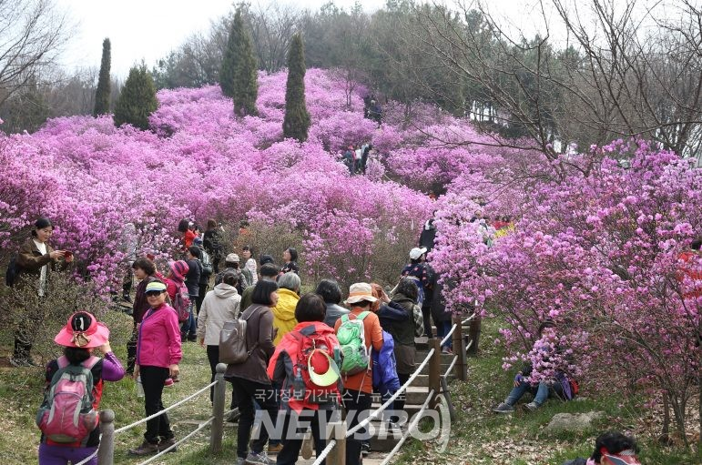
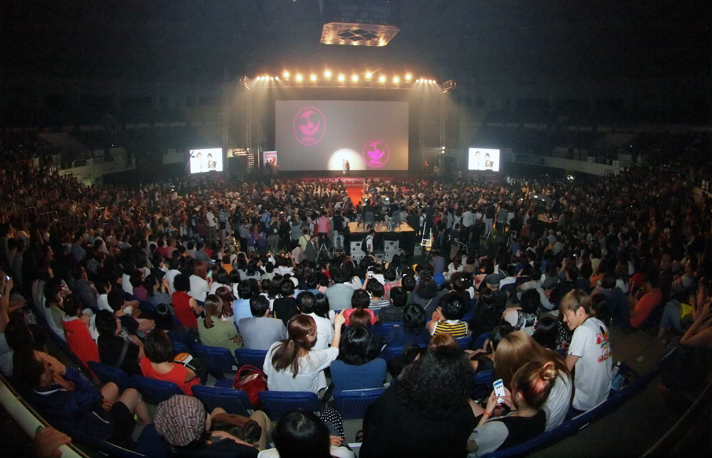
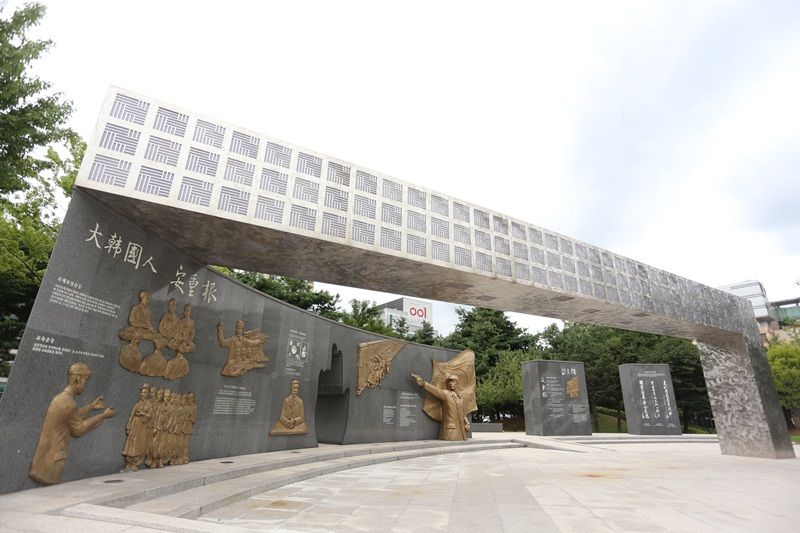

부천시 3대봄꽃축제
원미산 진달래 축제,도당산 벚꽃 축제,춘덕산 복숭아꽃 축제가
통합하여 개최되는 봄꽃축제이다.

부천 국제 판타스틱 영화제(BIFAN)
부천을 상징하는 영화 축제이다. 다양한 장르의 영화를 소개하며
영화를 감상할 기회를 제공한다. 보통 개막식은 부천시청 광장에서
진행되고 영화제는 부천 시내의 영화관 및 공공시설을 활용하여 진행한다.

안중근공원
안중근 의사를 기리는 공원이다. 안중근 의사의 동상을 비롯하여
생전에 썼던 유묵과 명언 등을 새긴 석조물들이 있다.
안중근 순국일을 기념하여 추모행사가 열리며, 의거기념 행사도 열린다.
